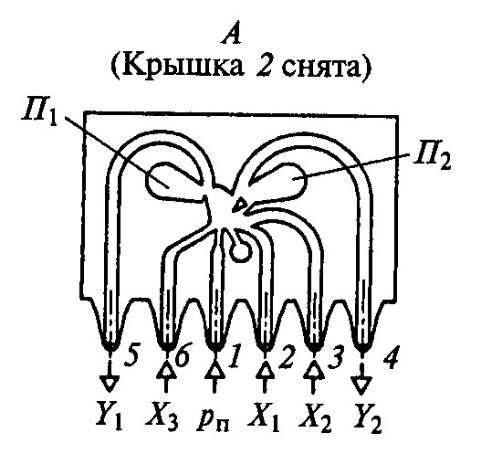

Fluidics is the construction of computing systems using fluids.
They employed water or air in plastic channels to implement logic gates; the gates were interconnected by standard, flexible plastic tubing. The advantage was their noise immunity, but their size and physical awkwardness was among their many negatives. A typical four-input AND or OR gate alone was about half the size of a deck of cards.
